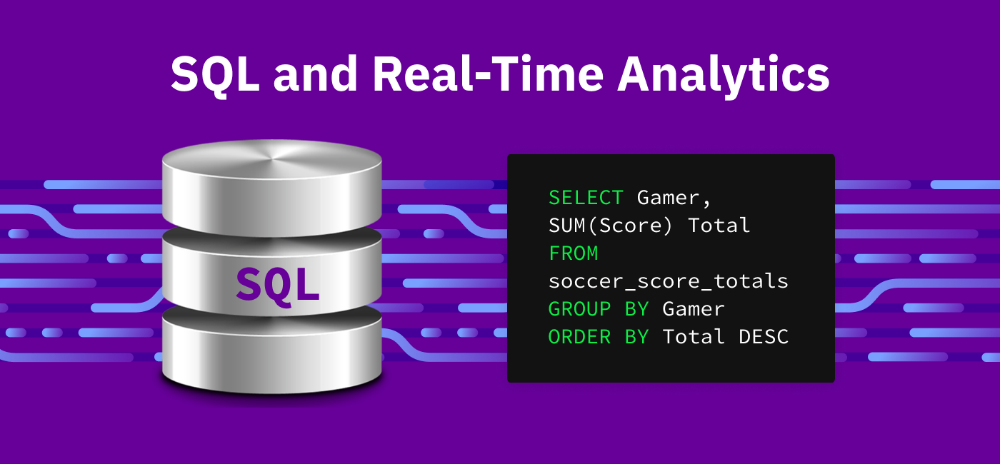

Query for a Realtime PowerBi Dashboard
Real time Query

This SQL query serves as the backbone of a real-time data visualization solution within Power BI, enabling the ability to monitor key metrics and performance indicators as they evolve.
By connecting directly to the database, we can retrieve live data streams and transform them into interactive visualizations that drive strategic decision-making.
Additionally, Power BI's visualization tools made it easy to transform complex SQL query results into dynamic charts, graphs, and reports, providing actionable insights at a glance.
This live Power Bi Dashboard capability will foster a more agile and data-driven decision-making process, ultimately enhancing operational efficiency and driving business success.
Main objectives
This project gave me the following leverages:
Immediate Insights
Integration with existing systems
Performance Monitoring
Timely Decison-making
Interactivity and Customization
User Accesibility
Exploratory Analysis
The Query was created based on key questions such as:
What data sources are available, and how frequently is the data updated?
What level of granularity is required for the real-time data analysis?
What security and privacy considerations need to be addressed when accessing real-time data from SQL databases?
How will the real-time dashboard integrate with existing reporting or analytics workflows?
What are the key performance indicators (KPIs) that need to be tracked in real-time?
Who are the primary stakeholders or users of the dashboard?


.png)